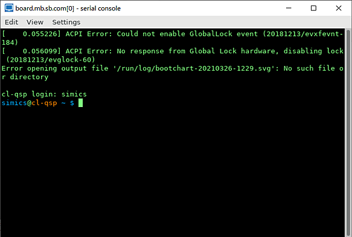
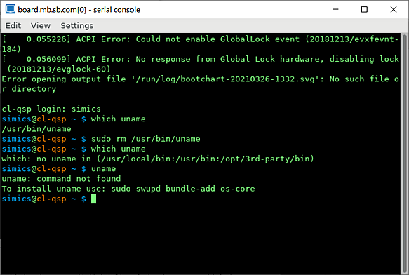

In addition to checkpoints, Simics can save the state of simulation in memory. We refer to such saved states as bookmarks or, sometimes, as time bookmarks. Bookmarks are not preserved after one quits the simulator. Once bookmarks have been created it is possible to jump between them.
In this section:
We assume that a user knows how to start Simics and how to get access to Simics CLI.
Creation and use of bookmarks:
create a target machine from Simics CLI by executing the targets/qsp-x86/firststeps.simics script with Simics run-command-file command:
simics> run-command-file targets/qsp-x86/firststeps.simics
start the created target machine:
simics> run
running>
wait until Linux has booted. When Linux has booted, a text terminal window connected to a serial port of the target machine will look like this: 
stop simulation:
running> stop
simics>
create a bookmark by running the set-bookmark Simics command and specifying a name for the bookmark (a bookmark can be created even when the simulation runs, but, in this case, we stopped it first):
simics> set-bookmark booted
where "booted" is a name we picked for a bookmark.
resume simulation:
simics> run
running>
do some changes to the target machine. As an example of such changes, the screenshot below shows how to identify where the uname utility is located, delete it and check that it cannot be found after it has been deleted:

stop simulation:
running> stop
simics>
restore simulation state to the one which was saved on step 4:
simics> skip-to booted
where skip-to is a command to restore simulation state from a bookmark, and "booted" is the name which we gave to the bookmark created on the step 4.
the text terminal of the simulated machine looks now like it did before we deleted uname utility on step 6:
What will happen now if we will run the simulation after we restored the state from the bookmark? By default, the simulator will just replay all user input, i.e. repeat all changes done to the simulated machine on the step 7 above. Let’s check this (the instructions below are to be done in the same simulation session where the previous steps have been executed):
run command on Simics CLI and observe on the text terminal windows of the target machine how Simics replays the changes which were done on the step 7 above stop command on Simics CLI How can one prevent Simics from replaying user input and do something different on the target machine after the simulation state has been restored from a bookmark? This can be done by executing the clear-recorder command via Simics CLI immediately after the state of the simulation has been restored from a bookmark. Let’s check this (the instructions below are to be done in the same simulation session where the previous steps have been executed):
restore simulation state to the one which was saved on step 4:
simics> skip-to booted
clear recorded input:
simics> clear-recorder
resume simulation with the run command:
simics> run
running>
note on the text terminal windows of the target machine that no changes happen now
Why is the default behavior for Simics is to replay the user input? This is because Simics struggles hard to provide repeatability which is very useful when debugging the software running on the target machine.